提取文字
选区里的中英文交给 Apple Vision 在本机识别，结果可以先改再复制。截图时按 O。
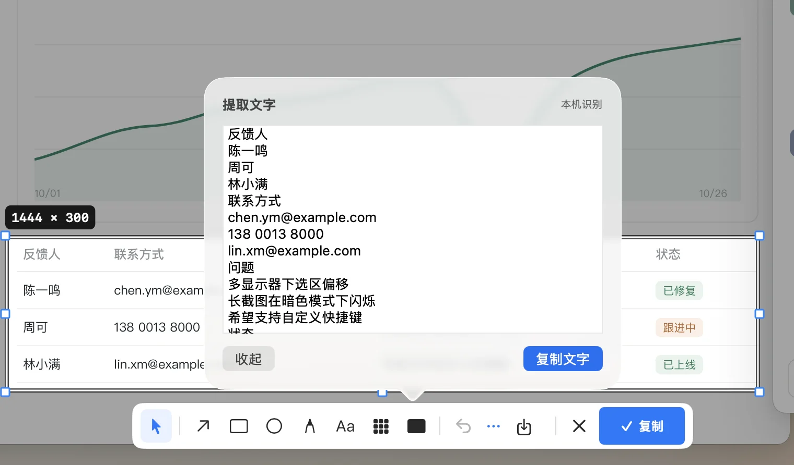
0.3.1 预览版 · macOS 14+
拾影安静地待在 Mac 菜单栏。按下快捷键，框选、标注、复制都在当前画面原地完成，不必再打开另一个编辑窗口。
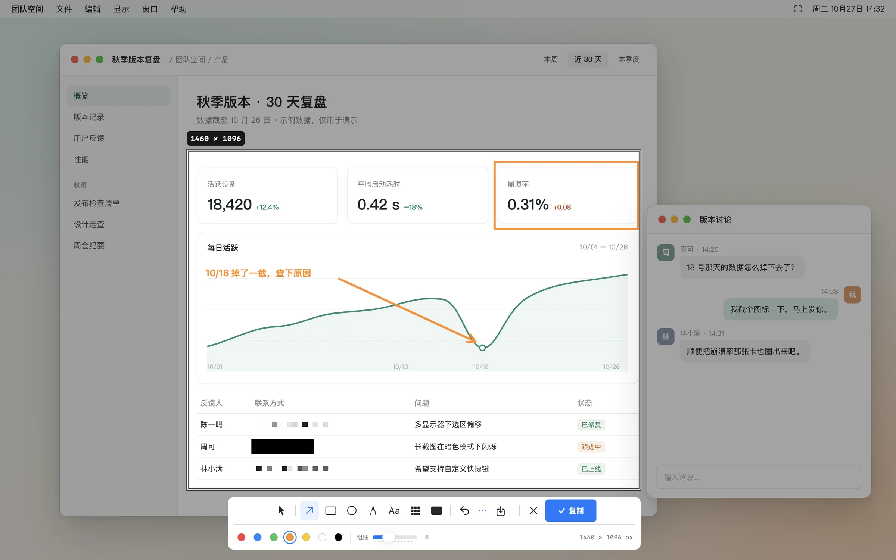
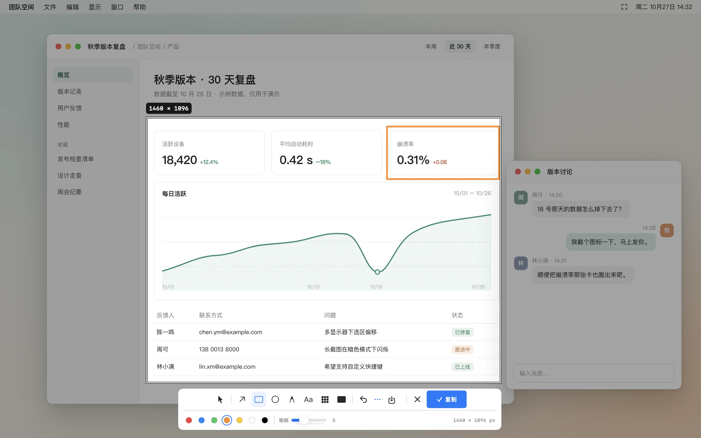
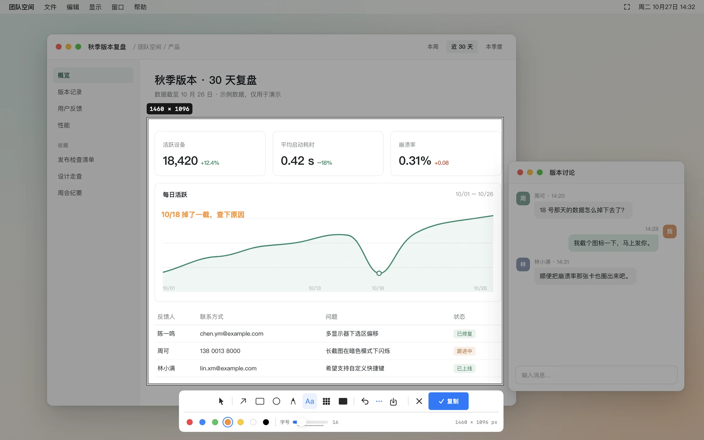
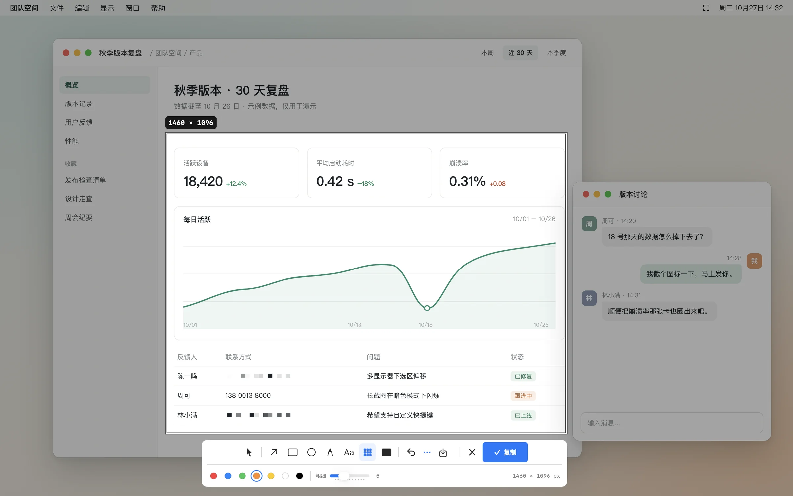
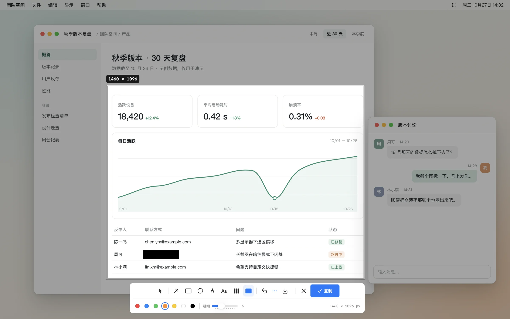
一次框选，箭头、方框、文字、马赛克与遮挡可以叠加使用。
界面截自拾影 0.3.1，画面中的看板与对话为示例内容。
标注就画在选区上，不弹编辑窗口。
默认 ⌃⌥4 随时开始。
Apple Vision，中英文都认得。
截图不会上传到开发者服务器。
原地标注
七种标注工具，数字键直接切换。颜色、粗细与字号在第二行调整，选区随时可以拖动或拉伸，已有标注不会被拉变形。
按 Enter 按你的设置完成，默认复制到剪贴板；⌘C 只复制、保留选区，Esc 放弃。
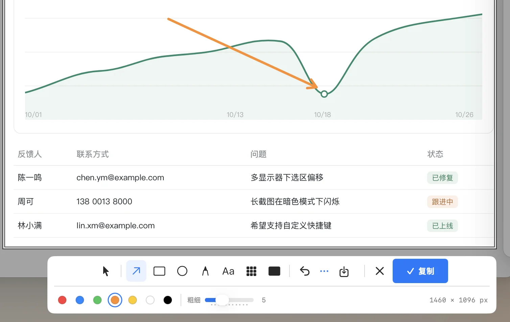
像素级瞄准
开始截图时，十字准星与放大镜跟着光标走，逐像素显示附近画面，并给出坐标和颜色值。光标停在窗口上，窗口边缘会被识别出来。
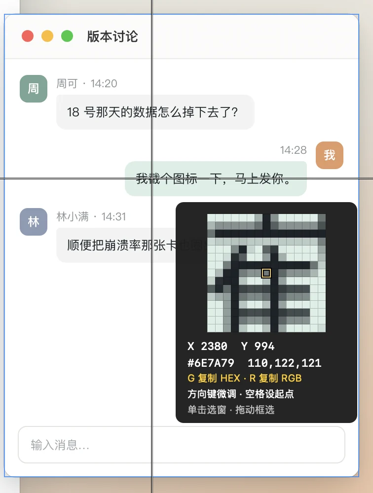
截完之后
选区里的中英文交给 Apple Vision 在本机识别，结果可以先改再复制。截图时按 O。

还可以重复上次的区域，或从菜单栏选择 3、5、10 秒后再截。
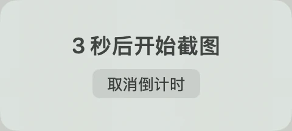
把截图贴在桌面上作参考，对照着写代码、填表都方便。截图时按 T。
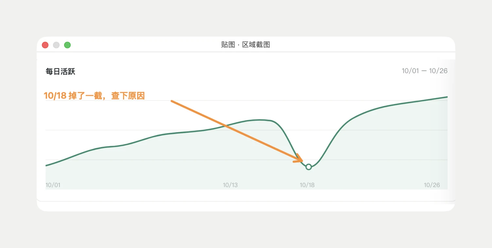
马赛克弱化细节；手机号、账号这类信息，请用不透明的遮挡。
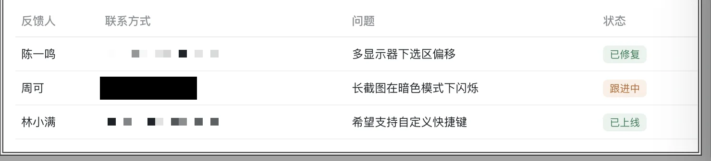
框好区域后手动向下滚动，边截边看拼接预览，可以暂停、继续。
复杂动画或重复内容可能影响拼接，长页面可分段截取。
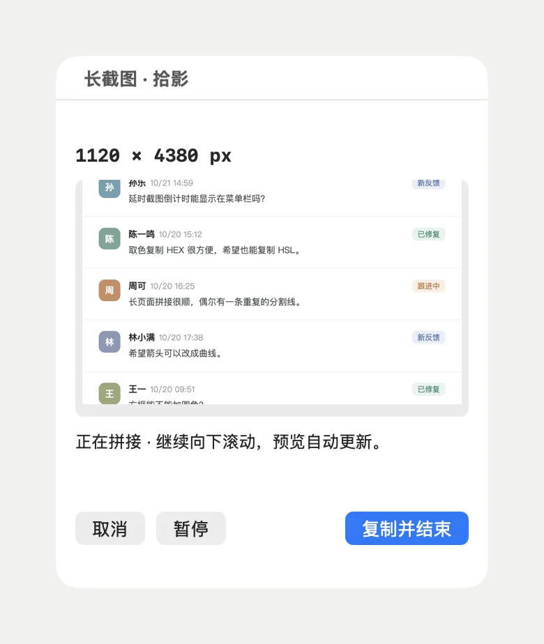
全局快捷键和工具键都能改。完成动作可选复制、保存文件、保存并复制或贴图，也可以登录时自动启动。
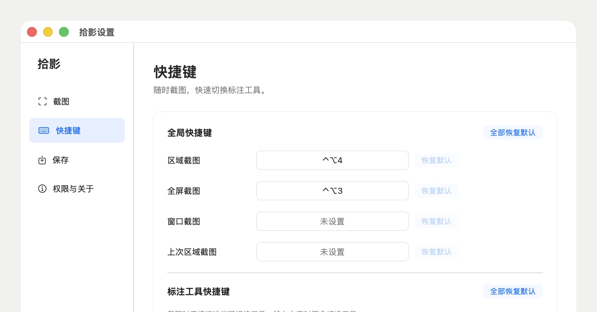
如何开始
拖出选区，或单击直接选中窗口。快捷键可以在设置里改成习惯的组合。
加一个箭头、一句备注，或者遮住敏感信息。
默认复制到剪贴板。也可以保存成文件，或贴在桌面上。
隐私
“屏幕录制”是 macOS 对读取屏幕的统一权限名，拾影不会因此持续录屏。
截图、标注与文字识别都在本机处理，不上传到开发者服务器。
没有账号体系；截图不会自动上传，也不会自动存盘。
常见问题
拾影支持 macOS 14（Sonoma）及更高版本。当前安装包为 Universal 2，同时支持 Apple Silicon 和 Intel Mac。Windows 与 iPhone 暂不支持。
打开 DMG，将拾影拖入 Applications（应用程序），再从应用程序文件夹打开。第一次截图时，按系统提示开启屏幕录制权限；如系统提示需要重新启动应用，请退出后再打开。
这是 macOS 对读取屏幕画面的统一权限名称。拾影通过它获取截图，并不因此持续录屏。你可以随时在“系统设置 → 隐私与安全性 → 屏幕录制”撤销权限。
应用不收集截图、识别文字或使用记录。复制内容进入系统剪贴板后，由 macOS 及你使用的其他应用管理。网站托管服务可能处理基础访问日志。
当前是 0.3.1 预览版。支持日常截图、标注、中英文文字识别、贴图与纵向连续长图。复杂动画或重复内容可能影响长图拼接；目前不提供录屏和翻译，导出图片不保留独立标注图层。
马赛克把画面变成像素块，适合弱化不重要的内容。处理姓名、账号等敏感信息，请使用不透明“遮挡”，并在分享前确认覆盖完整。